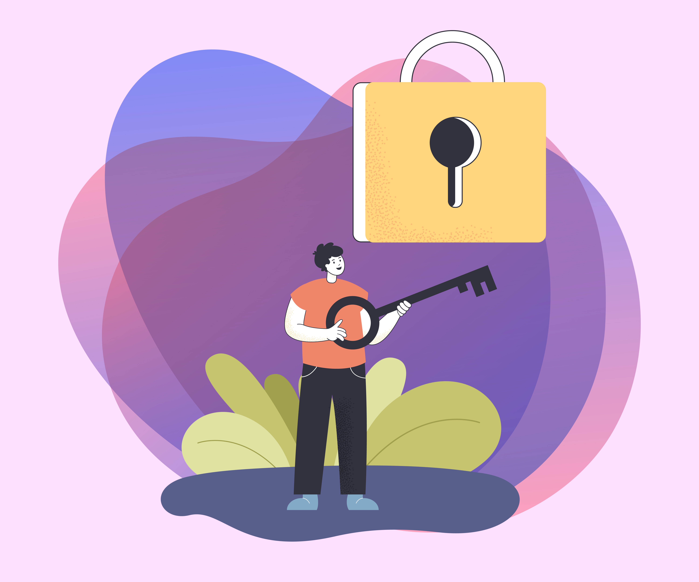

How to Create Strong Passwords in 2025
In 2025, online security is more important than ever. Cyber attacks, data breaches, and phishing scams are increasing every year. One of the easiest ways to protect yourself online is by using strong passwords.
What Makes a Password Strong?
A strong password should be long, unique, and unpredictable. Avoid using common words, names, or personal information.
- Minimum 12 characters
- Combination of letters, numbers, and symbols
- No dictionary words
- Different password for each account
Why Password Reuse Is Dangerous
Using the same password on multiple websites is one of the biggest security mistakes. If one website is compromised, attackers can access all your other accounts.
Use a Password Generator
Password generators like XD Secure Pass create random passwords that are extremely hard to crack. These passwords offer much stronger protection than manually created ones.
Best Practices for Password Management
- Use a password manager
- Change passwords regularly
- Enable two-factor authentication
- Avoid saving passwords on shared devices
Conclusion
Strong passwords are your first line of defense against cyber threats. Using a password generator ensures maximum security with minimal effort.